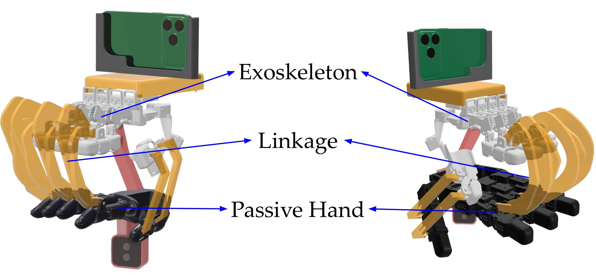
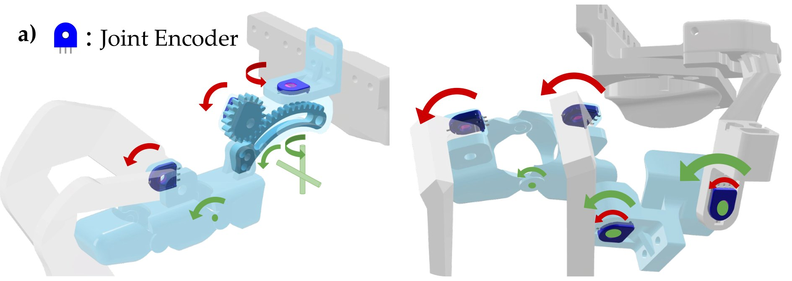
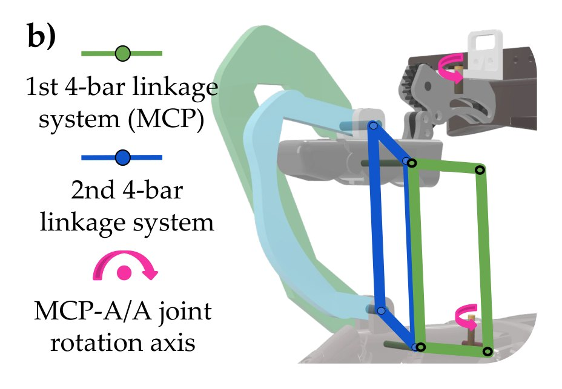
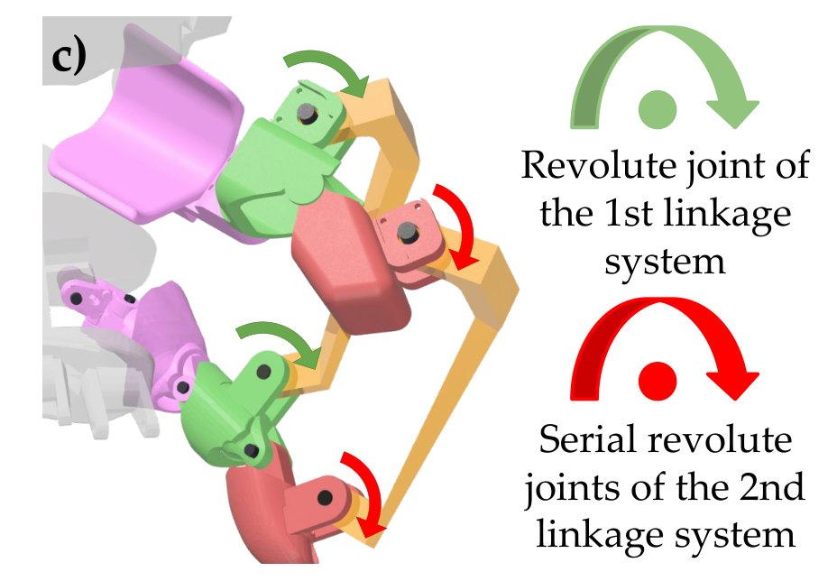
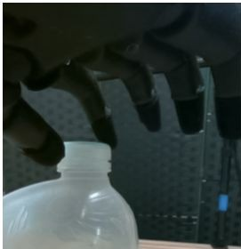
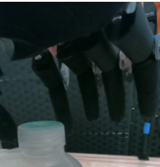
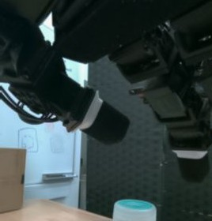
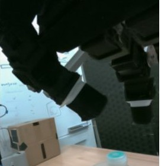

Abstract
Collecting demonstrations for dexterous manipulation is difficult to scale across robot hands with different kinematics and contact geometry. Existing interfaces often require embodiment-specific sensing hardware, motion retargeting, or visual correction. We present WUDI, a Wearable, Unified Interface for Dexterous manipulation that separates a shared sensorized exoskeleton from interchangeable passive hands and linkages. This design reuses the sensing hardware across embodiments and supports robot-free demonstration collection without visual correction within the supported workspace. We evaluate demonstration collection and policy learning with WUJI Hand v1 and LEAP Hand. To assess functional manipulation, we introduce OTHER, an eight-task suite inspired by occupational therapy that spans precision grasping, tool use, pulling, rotation, compression, and fastening. A 12-participant study evaluates usability and task performance, and demonstrations collected with WUDI support autonomous policies on three tasks across both hands. In an expert-operator comparison on LEAP Hand, WUDI yields 3.62–7.71× more successful task completions per collection window than a vision-based teleoperation baseline.
Method Overview
WUDI couples a shared sensorized exoskeleton to an interchangeable passive hand through embodiment-specific linkages. The passive hand reproduces the target’s supported articulation and contact geometry; all encoders and wiring remain on the exoskeleton. Adapting to a new hand requires selecting coupler dimensions and checking mechanical compatibility, while retaining the sensing hardware unchanged.

Mechanical Interface
Three components implement the separation of sensing and embodiment: a shared exoskeleton (16 resistive rotary sensors, ~$120 sensing assembly), interchangeable passive hands derived from target kinematics, and embodiment-specific four-bar linkages that transmit MCP/PIP flexion.

WUJI Hand v1 (left) · LEAP Hand (right). A shared sensorized exoskeleton connects to interchangeable passive hands through embodiment-specific linkages.

Shared across every hand
Sensorized exoskeleton
Joint sensing
Worn by the operator and left unchanged when the passive hand is replaced. Each finger accommodates MCP abduction/adduction and flexion plus PIP flexion; the thumb adds CMC, MCP and IP rotation. Sixteen resistive rotary sensors measure joint angles or linkage rotation relative to the supporting segment.
Localization
The iPhone on top streams its 6-DoF ARKit pose over USB via Record3D, and a keyed mount fixes the phone-to-palm transform, so the wrist is localized without a robot arm or external tracking. Pose samples are matched to the joint trajectory by timestamp and supply the policy’s relative end-effector poses.
- 15 operator-side DoF
- 16 rotary encoders
- 6-DoF wrist pose from ARKit
- ~$120 system, excl. phone & camera


Embodiment-specific
Four-bar linkages
Transmission
Couple the passive hand to the shared exoskeleton, accommodating MCP flexion, MCP abduction/adduction and PIP flexion. Following DEXOP, standoffs fix the base separation; the first coupler connects the two PIP axes and serves as the second linkage’s moving ground, and the second coupler connects the middle-link mounts.
Joints
Revolute joints on the linkage mounts connect the couplers: those of the first linkage system (green) and the serial joints of the second (red). A new hand needs only its own coupler dimensions and mount positions; thumb couplers are designed per embodiment.
- 2 serial four-bars per finger
- New hand = printed parts + fasteners


LEAP

Interchangeable
Passive hand + wrist camera
A replica of the target robot hand, derived from its kinematic description and link meshes. It reproduces the robot’s supported articulation and contact geometry but carries no encoders. A RealSense D405 below the palm records RGB-D from the viewpoint the robot will have at deployment.
No visual gap
Because the passive hand looks like the robot hand, collection frames match deployment frames, so policies train on them directly, with no segmentation, inpainting, or rendered hand replacement.
- RealSense D405 RGB-D
- CAD derived from the robot model
OTHER Benchmark
OTHER (Occupational Therapy-inspired Hand Evaluation and tRaining) is an eight-task suite for functional dexterity during human-operated demonstration collection and autonomous execution. Tasks span precision grasp (Coin), grip–torque (Lid), tool use (Write), constrained pulling (Zipper), rotation (Spin), compression (Squeeze), and fastening (Buckle / Unbuckle).

User Study
A 12-participant study (WUJI Hand v1 configuration) measured usability and task performance. Donning took 16.8±6.3 s. Success rates reached 100% on Zipper, Spin, and Lid; no successes on Squeeze or Unbuckle under the optional-continuation protocol. Perceived success averaged 3.83/5.
User-study montage (30×).

Portable Demonstration Collection
WUDI supports robot-free, portable collection after brief familiarization. On LEAP Hand, an expert operator achieved 3.62–7.71× more successful completions per 5-minute window than vision-based teleoperation on Zipper, Coin, and Lid.
In the WildPortable collection
Reconstruction & Workspace
Mechanism-based joint reconstruction on LEAP recovers passive-hand angles with MAE 1.34°–4.20° (RMSE ≤ 5.50°). Motion-capture validation below; fingertip workspace coverage relative to vision teleoperation is shown in Fig. 6.
Motion-capture validation
Index finger
Thumb

Policy Learning Across Hands
We collect 70 demonstrations per task–hand pair and train Diffusion Policy with wrist RGB and relative EE pose. Policies are evaluated on Zipper, Lid, and Coin for both WUJI Hand v1 and LEAP Hand (mounted on a UFactory xArm 6).
| Hand | Zipper | Lid | Coin |
|---|---|---|---|
| WUJI Hand v1 | 16/20 (80%) | 15/20 (75%) | 9/20 (45%) |
| LEAP Hand | 11/20 (55%) | 3/20 (15%) | 13/20 (65%) |
Table III — Policy success rates across robot hands and tasks.
All videos at 1× speed · fully autonomous
ZipperWUJI Hand v1
Design Extensions to Additional Hands
Beyond WUJI Hand v1 and LEAP Hand, five additional passive-hand and linkage designs (CAD + sim-verified) show that adapting WUDI requires only embodiment-specific coupler dimensions and mount adjustments. All seven designs will be released as open-source hardware.

Explore WUDI in 3D
The full LEAP Hand configuration: the shared sensorized exoskeleton with its iPhone mount, the embodiment-specific linkages, and the passive LEAP hand with its wrist camera. Drag to look around.